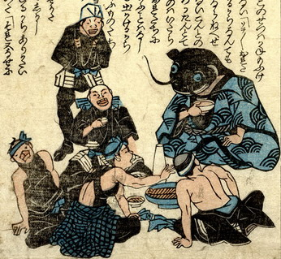

鯰が職人たちと宴会をしている。鯰は波の模様が入った青い着物を着て座り、片手に盃を持っている。職人たちは、それぞれ座ったり、立ったりしながら、楽しげに鯰と語らっている。
出典：親書誌：U426_nichibunken_0160：（地震小咄；ジシンコバナシ）／日付：2010／資源識別子：U426_nichibunken_0160_0004_0000
Copyright (c)2010- International Research Center for Japanese Studies, Kyoto, Japan. All rights reserved.